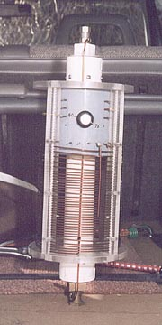

Here's a closer view of the coil. There's nothing remarkable about a coil, so I tried to make this monstrosity as esthetically
pleasing as practical. The coil is 14 gauge enameled copper from a motor winding shop. It was formed around a 4 inch piece of PVC
tubing on the lathe. Running the wire through my toweled hands to bend it through an S path while winding got all the knks out
before it wound around the mandrel.
The coil form however was not so simple. The vertical supports and top and bottom plates are all Lexan as well. I should
mention that Lexan, not Plexiglass was used due to it's much greater strength and weathering ability. The vertical supports
are 3/8" x 1/2" strips which were notched (routed) with a Dremel tool jigged to provide consistent spacing for the wire to lay
in. Two of these were then used back to back and screwed (4-40 brass) together to sandwich the turns (the idea of threading the coil
through all the holes of a drilled support was out of the question.) The upper turns (for 20 meters) were easily spread
apart by seperating these halves and popping the turns to the next "rung".
The next level of design was the central supporting shaft. This is 2" PVC with threaded couplings top and bottom. These are held
on to the tube with screws, not cement, to enable disassembly for future changes, which are inevitable. Into these are pipe
plugs, the lower one of brass for strength which has been faced off on the lathe for a flat square end. Both are fitted with
3/8"-24 antenna couplings.
Lastly, the 4" PVC sleeve mounted in the top holds a band switch. I brought out more taps than needed, but who knew?
The band switch is a heavy, ceramic based 10 amp, 12 position switch from a decade substitution resistor box from years gone by.
Even though it had good contact spacing and porcelin insulation it had to be replaced with a new switch (same kind) that had been
soaked in paraffin to prevent arcing. No problems since then but I wouldn't consider running and amplifier with switch implimented
like this.
The switch shorts across the bottom (unused) turns of the coil. This proves much more stable than leaving the turns open. The
taps were selected by trial and error, although the second approximation was usually only a hair off the final mark.
This leads me belive that there aren't a lot of significant stray factors affecting the coils inductance. The 75 meter tap
is clearly visible running down the front in this picture. On 75m 60% of the coil is used. The full coil resonates about
2.2 MHz. I suspect a capacity hat on the radiator might get me into the 160m band. Maybe I'll try that someday.
Next frame